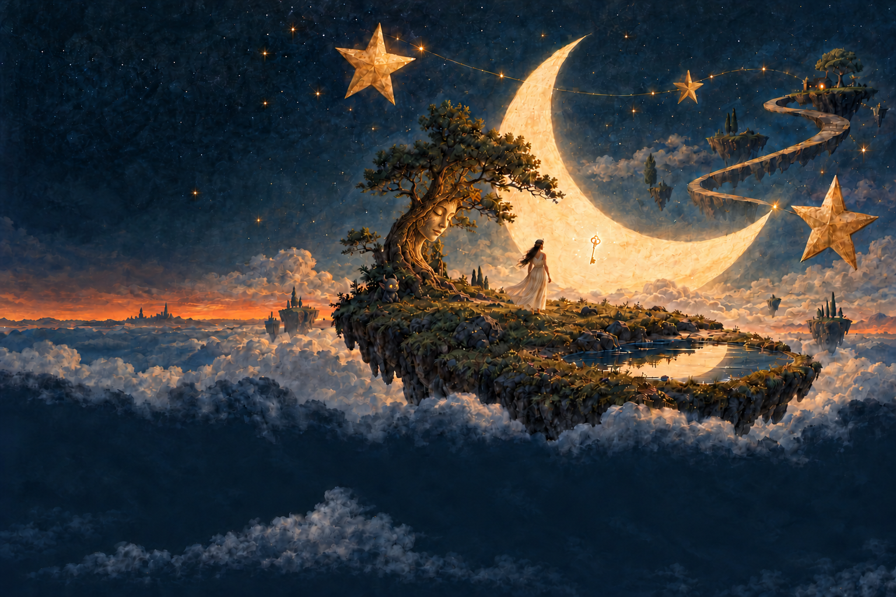

TRACK / 01
Luna
推荐理由待音乐虫子补充。
收听链接待补充
THE KEEPER OF QUIET SOUNDS
有些声音，连树也记得。
希腊神话中的 Hamadryads 与特定树木共生。这里的树皮面容是受神话启发的原创形象。
树根旁的小恶魔精灵是原创的月尘小灵，短角、尖耳与暖金眼睛为它的林地形态。
读一段树灵的神话 ↗THE KEY TO A SOUND DREAM
她守着月光，也守着那扇尚未开启的门。
她是 Selene，希腊神话中的月之化身。夜色降临时，她驾着月车穿过天空，让月光落向沉睡的大地。
悬在她身旁的钥匙，是这场梦境里的原创意象：它开启通往声音记忆的门。每一首歌，都像一间被月光照亮的房间，等着旅人拾级而入。
钥匙属于本站的故事设定，并非 Selene 在古希腊神话中的传统象征。
读一段 Selene 的神话 ↗01 / ABOUT THE BAND
温柔与噪音，
可以住在同一片星空里。
The Smashing Pumpkins（碎南瓜）是一支来自美国芝加哥的摇滚乐队。他们的音乐里有厚重的吉他，也有轻柔、梦幻的片刻。
这是音乐虫子的私人入门指南。这里会慢慢放入我选的歌曲、想推荐的专辑，以及某一次被声音打动的瞬间。
前往乐队官网02 / SELECTED TRACKS
音乐虫子选的三首歌。
推荐理由与收听入口，稍后补上。
TRACK / 01
推荐理由待音乐虫子补充。
收听链接待补充TRACK / 02
推荐理由待音乐虫子补充。
收听链接待补充TRACK / 03
推荐理由待音乐虫子补充。
收听链接待补充03 / FURTHER LISTENING
喜欢一首歌以后，
也许值得走进一整张专辑。
THE NEXT CHAPTER
推荐理由待音乐虫子补充。
封面与收听链接待补充ANOTHER SIDE
推荐理由待音乐虫子补充。
封面与收听链接待补充04 / A MOMENT TO KEEP
有些歌，是因为某一刻
才留下来的。
这段笔记，留给音乐虫子来写。
可以记下一个突然响起的吉他、一段人声，或者当时的生活片段。无需完整乐评，写下那个值得回来的瞬间就好。
05 / BEYOND THE SONGS
旋律之外，还有组成一支乐队的日常与转折。
这里会收录他们有趣、难过或值得记住的真实经历。具体故事与资料出处待整理。
故事待补充06 / SEEN AND REMEMBERED
让照片和影像，带我们再看一次那些时刻。
07 / INSIDE THE SOUND
从清澈的余响，到毛边厚重的吉他声。
留给清音更多空间，也留给听者一点回望。
让声音变得粗粝、密实，像一片缓慢推进的云。
08 / WHAT THEY LISTEN TO
听听乐队成员喜欢的音乐，也许能发现声音的来处。
成员提过的音乐、推荐与采访出处会放在这里；在核实前，不替他们编一份歌单。
成员推荐待补充09 / SEE YOU THERE
当歌声离开耳机，去到一座城市、一间场馆。
巡演日期、城市与官方购票入口，核实后再更新。
演出信息待核实10 / SOMETHING TO KEEP
一件能把听歌时刻带回日常的小东西。
唱片、海报和乐队周边会在这里慢慢整理。商品、图片、价格与购买链接待核对。
周边资料待补充